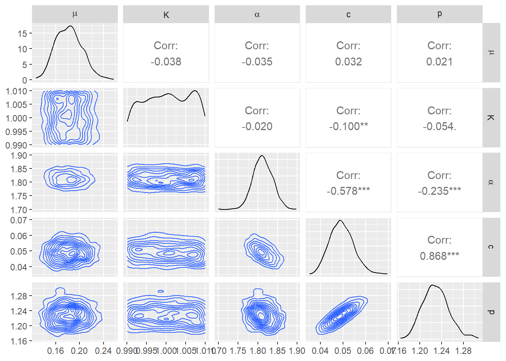
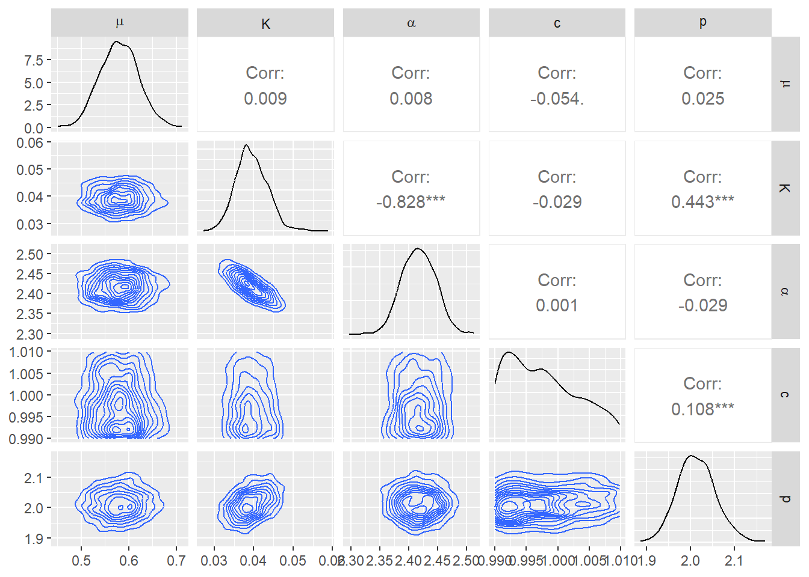
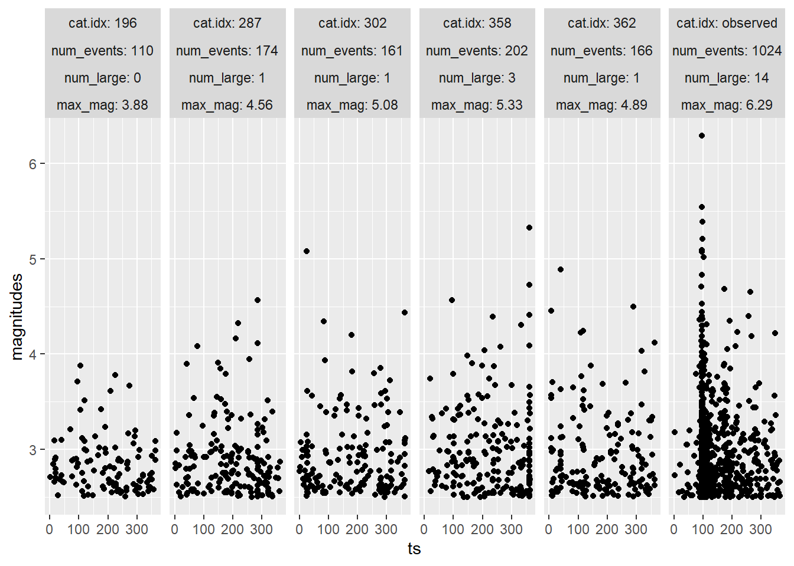
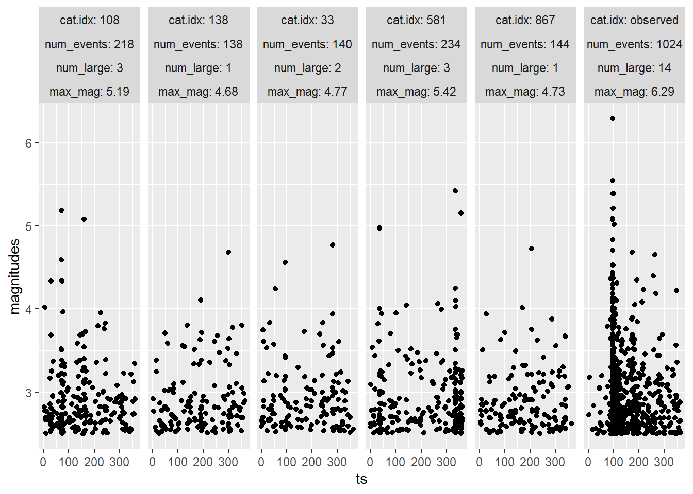
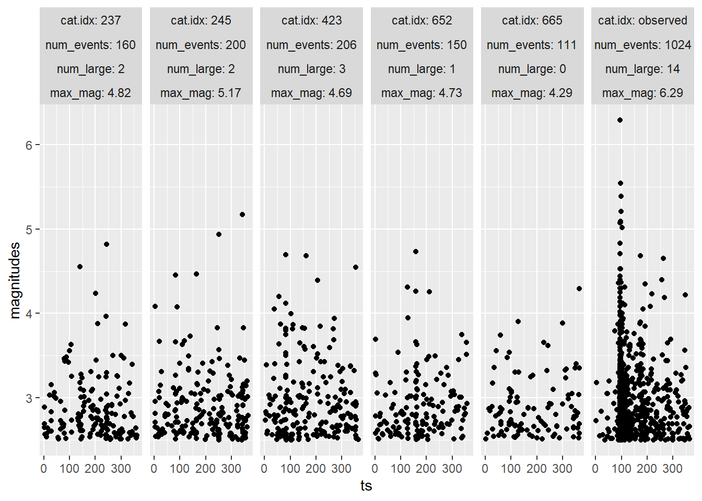

require(tidyverse)
require(knitr)
require(kableExtra)
require(factoextra)
require(cluster)
require(ETAS.inlabru)
require(ggplot2)
require(plotly)
require(dplyr)
require(magrittr)
require(tidyquant)
require(rnaturalearth)
require(terra)
require(sf)
require(ggspatial)
require(rnaturalearthdata)
require(lubridate)
num.cores <- 1
future::plan(future::multisession, workers = num.cores)
INLA::inla.setOption(num.threads = num.cores)Earthquake Forecasting
Dissertation Project 2
Copula transformation of the priors
# set copula transformations list
link.f <- list(
mu = \(x) gamma_t(x, .3, .6),
K = \(x) unif_t(x, 0, 10),
alpha = \(x) unif_t(x, 0, 10),
c_ = \(x) unif_t(x, 0, 10),
p = \(x) unif_t(x, 1, 10)
)
# set inverse copula transformations list
inv.link.f <- list(
mu = \(x) inv_gamma_t(x, .3, .6),
K = \(x) inv_unif_t(x, 0, 10),
alpha = \(x) inv_unif_t(x, 0, 10),
c_ = \(x) inv_unif_t(x, 0, 10),
p = \(x) inv_unif_t(x, 1, 10)
)# obtain sample from standard normal distribution
X <- rnorm(1000)
# apply copula transformations
gamma.X <- gamma_t(X, .3, .6)
unif.X <- unif_t(X, 0, 10)
unif.X.2 <- unif_t(X, 1, 10)
# build data.frame for plotting
df.to.plot <- rbind(
data.frame(
value = gamma.X,
distribution = "Gamma(0.3, 0.6)"
),
data.frame(
value = unif.X,
distribution = "Uniform(0, 10)"
),
data.frame(
value = unif.X.2,
distribution = "Uniform(1, 10)"
)
)# plot them
ggplot(df.to.plot, aes(value)) +
geom_density() +
theme_bw() +
facet_wrap(facets = ~ distribution, scales = "free")Italy
# transform time string in Date object
horus$time_date <- as.POSIXct(
horus$time_string,
format = "%Y-%m-%dT%H:%M:%OS",
tz = "UTC"
)
# There may be some incorrectly registered data-times in the original data set,
# that as.POSIXct() can't convert, depending on the system.
# These should ideally be corrected, but for now, we just remove the rows that
# couldn't be converted.
# horus <- na.omit(horus)
# set up parameters for selection
start.date <- as.POSIXct("2009-01-01T00:00:00",
format = "%Y-%m-%dT%H:%M:%OS")
end.date <- as.POSIXct("2010-01-01T00:00:00", format = "%Y-%m-%dT%H:%M:%OS")
min.longitude <- 10.5
max.longitude <- 16
min.latitude <- 40.5
max.latitude <- 45
M0 <- 2.5
# set up conditions for selection
aquila.sel <- (horus$time_date >= start.date) &
(horus$time_date < end.date) &
(horus$lon >= min.longitude) &
(horus$lon <= max.longitude) &
(horus$lat >= min.latitude) &
(horus$lat <= max.latitude) &
(horus$M >= M0)
# select
aquila <- horus[aquila.sel, ]ggplot() +
geom_sf(data = aquila.sf[aquila$M > 3,], size = 0.8) +
geom_sf(data = italy.map, fill = alpha("lightgrey", 0), colour = 'green',
linewidth = 0.7) +
geom_sf(data = aquila.sf[aquila$M > 5,], size = 0.9, colour = 'orange') +
geom_sf(data = aquila.sf[aquila$M > 6,], size = 1, colour = 'red') +
ggtitle("Map of event locations")ETAS <- function(data = aquila.bru, m0 = M0, t1 = T1, t2 = T2,
ncore = num.cores, Link.f = link.f,
Bru.opt.list = bru.opt.list, n.samp = 1000,
max.batch = 1000, mag = 4.5, n.breaks = 100,
t.end.tri.post = 5, t.end.tri.prior = 10,
t.end.omori.post = 5, t.end.omori.prior = 5){
# maximum likelihood estimator for beta
beta.p <- 1 / (mean(data$magnitudes) - m0)
# fit the model
model.fit <- Temporal.ETAS(
total.data = data,
M0 = m0,
T1 = t1,
T2 = t2,
link.functions = Link.f,
coef.t. = 1,
delta.t. = .1,
N.max. = 5,
bru.opt = Bru.opt.list
)
# create input list to explore model output
input_list <- list(
model.fit = model.fit,
link.functions = Link.f
)
# get marginal posterior information
post.list <- get_posterior_param(input.list = input_list)
# plot marginal posteriors
postplot <- post.list$post.plot
# posterior sampling
post.samp <- post_sampling(
input.list = input_list,
n.samp = n.samp,
max.batch = max.batch,
ncore = num.cores
)
# taking the averages of the posterior parameter estimates
post.par <- apply(post.samp, 2, mean)
# pair plot
pair.plot <- post_pairs_plot(
post.samp = post.samp,
input.list = NULL,
n.samp = NULL,
max.batch = max.batch
)
pairplot <- pair.plot$pair.plot
# set additional elements of the list
input_list$T12 <- c(t1, t2)
input_list$M0 <- m0
input_list$catalog.bru <- data
# posterior number of events
N.post <- get_posterior_N(input.list = input_list)
Npostplot <- N.post$post.plot
Npostmean <- N.post$post.df[which.max(N.post$post.df$mean), 1]
# number of large events
large_events <- data[data$magnitudes >= mag,]
Nlarge <- nrow(large_events)
# mean absolute distance of the differences in magnitudes
diff_mag <- diff(data$magnitudes)
abs_dist_mag <- mean(abs(diff_mag))
# mean absolute distance of the inter-arrival time
interarrival <- diff(data$ts)
abs_dist_int <- mean(abs(interarrival))
# check if overdispersion occurs
m_int_time <- mean(interarrival)
v_int_time <- var(interarrival)
overdisp <- m_int_time ^ 2 < v_int_time
# triggering function plots
# posterior
triplotpost <- triggering_fun_plot(
input.list = input_list,
post.samp = post.samp,
n.samp = NULL, magnitude = mag,
t.end = t.end.tri.post, n.breaks = n.breaks
)
# prior
triplotprior <- triggering_fun_plot_prior(input.list = input_list,
magnitude = mag, n.samp = n.samp,
t.end = t.end.tri.prior)
# omori plots
# posterior
omoripost <- omori_plot_posterior(input.list = input_list,
post.samp = post.samp,
n.samp = NULL, t.end = t.end.omori.post)
# prior
omoriprior <- omori_plot_prior(input.list = input_list,
n.samp = n.samp,
t.end = t.end.omori.prior)
# returns the whole environment
envir <- as.list(environment())
return(tibble::lst(envir))
}
etas <- ETAS()Effect of mis-specifying parameters
Copula <- function(mu_a = .3, mu_b = .6,
k_a = 0, k_b = 10,
alp_a = 0, alp_b = 10,
c_a = 0, c_b = 10,
p_a = 1, p_b = 10){
# set copula transformations list
linkf <- list(
mu = \(x) gamma_t(x, mu_a, mu_b),
K = \(x) unif_t(x, k_a, k_b),
alpha = \(x) unif_t(x, alp_a, alp_b),
c_ = \(x) unif_t(x, c_a, c_b),
p = \(x) unif_t(x, p_a, p_b)
)
# set inverse copula transformations list
invlinkf <- list(
mu = \(x) inv_gamma_t(x, mu_a, mu_b),
K = \(x) inv_unif_t(x, k_a, k_b),
alpha = \(x) inv_unif_t(x, alp_a, alp_b),
c_ = \(x) inv_unif_t(x, c_a, c_b),
p = \(x) inv_unif_t(x, p_a, p_b)
)
# set up list of initial values
thinit <- list(
th.mu = invlinkf$mu(.5),
th.K = invlinkf$K(1),
th.alpha = invlinkf$alpha(1),
th.c = invlinkf$c_(1),
th.p = invlinkf$p(5)
)
# set up list of bru options
bruoptlist <- list(
bru_verbose = 3, # type of visual output
bru_max_iter = 70, # maximum number of iterations
# bru_method = list(max_step = 0.5),
bru_initial = thinit # parameters' initial values
)
# returns the whole environment
environ <- as.list(environment())
return(tibble::lst(environ))
}
cop_mis_mu <- Copula(mu_a = 5, mu_b = 1)
cop_mis_K <- Copula(k_a = .99, k_b = 1.01)
cop_mis_alp <- Copula(mu_a = .99, mu_b = 1.01)
cop_mis_c <- Copula(c_a = .99, c_b = 1.01)
cop_mis_p <- Copula(p_a = 4.9, p_b = 5.1)
etas_mis_mu <- ETAS(Link.f = cop_mis_mu$environ$linkf,
Bru.opt.list = cop_mis_mu$environ$bruoptlist)
etas_mis_K <- ETAS(Link.f = cop_mis_K$environ$linkf,
Bru.opt.list = cop_mis_K$environ$bruoptlist)
etas_mis_alp <- ETAS(Link.f = cop_mis_alp$environ$linkf,
Bru.opt.list = cop_mis_alp$environ$bruoptlist)
etas_mis_c <- ETAS(Link.f = cop_mis_c$environ$linkf,
Bru.opt.list = cop_mis_c$environ$bruoptlist)
etas_mis_p <- ETAS(Link.f = cop_mis_p$environ$linkf,
Bru.opt.list = cop_mis_p$environ$bruoptlist)

Synthetic catalogues generation
mult.synth.ETAS <- function(t1 = NULL, t2 = NULL, n.cat = 1000,
ht = NULL){
# inherits the environment from function `ETAS`
envir <- etas$envir
# updates environments if specified by users
envir$t1 <- ifelse(!is.null(t1), t1, envir$t1)
envir$t2 <- ifelse(!is.null(t2), t2, envir$t2)
# Function to generate a synthetic catalogue
synth.gen <- function(i){
iteration <- i
synth <- generate_temporal_ETAS_synthetic(
theta = envir$post.par %>% as.list,
beta.p = envir$beta.p,
M0 = envir$m0, T1 = envir$t1,
T2 = envir$t2, Ht = ht, ncore = num.cores)
return(synth)
}
# generates catalogues as list of lists
multi.synth.cat.list <- lapply(seq_len(n.cat), \(x)
synth.gen(x))
# stores catalogues as list of data.frames
multi.synth.cat.list.df <- lapply(multi.synth.cat.list,
\(x) do.call(rbind, x))
# counts the number of events in each catalogue
Nevents <- lapply(seq_len(n.cat), \(i) nrow(
multi.synth.cat.list.df[[i]])) %>% unlist
# counts the number of large events in each catalogue
mag <- etas$envir$mag
Nlarge <- lapply(seq_len(n.cat), \(i) sum(
multi.synth.cat.list.df[[i]]$magnitudes >= mag)) %>% unlist
# extracts the highest magnitude in each catalogue
MaxMag <- lapply(seq_len(n.cat), \(i) max(
multi.synth.cat.list.df[[i]]$magnitudes)) %>% unlist
# sets catalogue identifier
multi.synth.cat.list.df <- lapply(seq_len(n.cat),
\(x) cbind(
multi.synth.cat.list.df[[x]],
cat.idx = x,
num_events = Nevents[x],
num_large = Nlarge[x],
max_mag = MaxMag[x] %>% round(2)))
# merges catalogues in unique data.frame
multi.synth.cat.df <- do.call(rbind, multi.synth.cat.list.df)
# returns the whole environment
environ <- as.list(environment())
return(tibble::lst(environ))
}
mult.synth <- mult.synth.ETAS(ht = NULL)Fitting Models on the Synthetic Catalogues
hier_clu_samp <- function(syn = mult.synth, kmax = 30){
# This function aims at performing hierarchical clustering
# for the synthetic catalogues specified in `syn`, as well as
# selecting 1 sample in each of the `kmax` clusters.
# Extract the number of events, the number of large events, as well as
# the highest magnitude in each catalogue.
# Store them into a data frame, and rescale each column.
multi.synth.cat.list.df <- syn$environ$multi.synth.cat.list.df
syn.cat.info <- multi.synth.cat.list.df %>% length %>% seq_len %>%
lapply(\(i) multi.synth.cat.list.df[[i]][1, 5 : 7])
synth.df <- do.call(rbind, syn.cat.info)
synth.df.rescaled <- do.call(cbind, synth.df %>% ncol %>% seq_len %>%
lapply(\(x) (synth.df[, x] - min(synth.df[, x])) /
(max(synth.df[, x]) - min(synth.df[, x]))))
colnames(synth.df.rescaled) <- c('num_events_rescaled',
'num_large_rescaled',
'max_mag_rescaled')
# Calculate the agglomerative coefficients for different
# linkage methods, and select the method with the highest
# agglomerative coefficient.
link_m <- c('single', 'complete', 'average', 'ward')
agg_coef <- link_m %>%
sapply(\(i) (synth.df.rescaled %>% agnes(method = i))$ac)
method <- agg_coef %>% which.max %>% names
method <- ifelse(!(method == 'ward'), method, 'ward.D2')
# Determine the optimal number of clusters up to `kmax`.
opt_num <- clusGap(synth.df.rescaled, FUN = hcut,
K.max = kmax, B = 20)$Tab[, 3] %>% which.max
# Add a new column specifying the numbers of clusters.
synth.final <- synth.df.rescaled %>%
cbind(
cluster = synth.df.rescaled %>%
dist(method = 'euclidean') %>%
hclust(method = method) %>%
cutree(k = opt_num)
)
# Plot a 3-dimensional scatter plot of the final data frame.
three_d_scatter <- plot_ly(x = synth.df[, 1],
y = synth.df[, 2],
z = synth.df[, 3],
type = 'scatter3d', mode = 'markers',
color = synth.final[, 4]) %>%
layout(scene =
list(xaxis = list(title = 'Number of Events'),
yaxis = list(title = 'Number of Large Events'),
zaxis = list(title = 'Maximum Magnitudes')),
legend =
list(title = list(text = 'Clusters')))
# Discard catalogues having over 1600 events, since these might
# make the models crash.
synth <- cbind(synth.df, synth.final[, 4])
colnames(synth)[4] <- 'clusters'
synth_1600 <- synth[synth$num_events <= 1600,]
# Select 1 sample from each cluster.
categories <- as.factor(synth_1600$clusters)
samp.id <- ((categories %>% levels %>% as.numeric) %>%
lapply(
\(i) (synth_1600$clusters == i) %>%
which %>% sample(1))) %>% unlist %>% sample
# Return the sample id and the 3D scatter plot.
return(tibble::lst(samp.id, three_d_scatter))
}
hier_c <- hier_clu_samp(mult.synth)
sampid <- hier_c$samp.idRun this chunk in Rmarkdown to get the 3D interactive scatter plot of the clustered catalogues.
3D Scatter Plot (static) of the Clustered Catalogues
synth.model <- function(syn = mult.synth,
slice = seq(1, 5, by = 1)){
Nevents <- syn$environ$Nevents
Nlar <- syn$environ$Nlarge
MaxMag <- syn$environ$MaxMag %>% round(2)
samp.id <- sampid[slice]
# we need to bing the synthetics with the observed catalogue
# for plotting
cat.df.for.plotting <- rbind(
syn$environ$multi.synth.cat.df[
which(
syn$environ$multi.synth.cat.df$cat.idx %in% samp.id),
],
cbind(syn$environ$envir$data[, c("ts", "magnitudes")],
gen = NA, cat.idx = "observed", num_events = nrow(etas$envir$data),
num_large = etas$envir$Nlarge,
max_mag = max(etas$envir$data$magnitudes) %>% round(2)
)
)
# plot them
multi.synth.cat.plot <- ggplot(cat.df.for.plotting,
aes(ts, magnitudes)) +
geom_point(size = 0.5) +
geom_point(
data = syn$environ$ht,
mapping = aes(ts, magnitudes), colour = "black"
) +
facet_wrap(facets = vars(cat.idx, num_events, num_large, max_mag),
labeller = 'label_both', ncol = 6)
# modelling
post <- rep(list(NULL), samp.id %>% length)
post.par <- matrix(rep(0, (samp.id %>% length) * 5),
ncol = 5)
for(i in samp.id %>% length %>% seq_len){
multi.synth.etas <- ETAS(data =
syn$environ$multi.synth.cat.list.df[[samp.id[i]]],
t1 = syn$environ$envir$t1,
t2 = syn$environ$envir$t2)
post[[i]] <- multi.synth.etas$envir$post.list
post.par[i,] <- multi.synth.etas$envir$post.par
post[[i]]$post.df$Catalogues <-
paste('Random Catalogue', i, ':\n', Nevents[samp.id[i]],
'Events, with', Nlar[samp.id[i]], 'Large Events,\n',
'and the Highest Magnitude is', MaxMag[samp.id[i]])
}
df.true.param <- data.frame(x = etas$envir$post.par,
param = names(etas$envir$post.par %>% as.list))
# bind marginal posterior data.frames
bind.post.df <- do.call(rbind,
lapply(samp.id %>% length %>% seq_len,
\(i) post[[i]]$post.df))
# plot them
post.par.plot <- ggplot(bind.post.df,
aes(x = x, y = y, colour = Catalogues)) +
geom_line() +
facet_wrap(facets = ~ param, scales = "free") +
xlab("param") +
ylab("pdf") +
geom_vline(
data = df.true.param,
mapping = aes(xintercept = x), linetype = 2
)
# returns the whole environment
environ <- as.list(environment())
return(tibble::lst(environ))
}
mult.synth.fit <- lapply(seq_len(5), \(i) synth.model(syn = mult.synth,
slice = seq(5 * (i - 1) + 1, 5 * i, by = 1)))


Analysis on the Behaviours of the Time-between-Events
ECDF.interarrival <- function(j){
samp.id <- mult.synth.fit[[j]]$environ$samp.id
Nevents <- mult.synth.fit[[j]]$environ$Nevents
Nlar <- mult.synth.fit[[j]]$environ$Nlar
MaxMag <- mult.synth.fit[[j]]$environ$MaxMag
data.list <- lapply(samp.id %>% length %>% seq_len, \(i) data.frame(
Time_between_events =
mult.synth$environ$multi.synth.cat.list.df[[samp.id[i]]]$ts %>%
sort %>% diff,
Catalogues = paste('Random Catalogue', i, ':\n',
Nevents[samp.id[i]],
'Events, with', Nlar[samp.id[i]], 'Large Events,\n',
'and the Highest Magnitude is',
MaxMag[samp.id[i]] %>% round(2))
)
)
data.list[[length(samp.id) + 1]] <- data.frame(
Time_between_events = etas$envir$interarrival,
Catalogues = paste('Observed', ':\n', nrow(etas$envir$data),
'Events, with', etas$envir$Nlarge, 'Large Events,\n',
'and the Highest Magnitude is',
max(etas$envir$data$magnitudes) %>% round(2)))
df <- do.call(rbind, data.list)
ECDF.plot <- ggplot(df, aes(x = Time_between_events,
colour = Catalogues)) +
stat_ecdf() +
xlab('Time between Events') +
ylab('Empirical Cumulative Probability')
KS.plot <- samp.id %>% length %>% seq_len %>% lapply(
\(i) data.list[[i]]$Time_between_events %>%
inla.ks.plot(
data.list[[samp.id %>% length + 1]]$Time_between_events %>%
ecdf))
return(tibble::lst(ECDF.plot, KS.plot))
}
ecdf_interarrival <- lapply(seq_len(5), \(j) ECDF.interarrival(j))ECDF.interarrival.imp <- function(n.cat = 10, data = etas$envir$data){
mult.synth.imp <- mult.synth.ETAS(n.cat = n.cat,
ht = data[which.max(data$magnitudes),])
Nevents <- mult.synth.imp$environ$Nevents
Nlar <- mult.synth.imp$environ$Nlar
MaxMag <- mult.synth.imp$environ$MaxMag
data.list <- lapply(n.cat %>% seq_len, \(i) data.frame(
Time_between_events =
mult.synth.imp$environ$multi.synth.cat.list.df[[i]]$ts %>%
sort %>% diff,
Catalogues = paste('Random Catalogue', i, ':\n', Nevents[i],
'Events, with', Nlar[i], 'Large Events,\n',
'and the Highest Magnitude is',
MaxMag[i] %>% round(2))
)
)
data.list[[n.cat + 1]] <- data.frame(
Time_between_events = etas$envir$interarrival,
Catalogues = paste('Observed', ':\n', nrow(etas$envir$data),
'Events, with', etas$envir$Nlarge, 'Large Events,\n',
'and the Highest Magnitude is',
max(etas$envir$data$magnitudes) %>% round(2)))
df <- do.call(rbind, data.list)
ECDF.plot <- ggplot(df, aes(x = Time_between_events,
colour = Catalogues)) +
stat_ecdf() +
xlab('Time between Events') +
ylab('Empirical Cumulative Probability')
KS.plot <- n.cat %>% seq_len %>% lapply(
\(i) data.list[[i]]$Time_between_events %>%
inla.ks.plot(data.list[[n.cat + 1]]$Time_between_events %>%
ecdf))
return(tibble::lst(ECDF.plot, KS.plot))
}
ecdf_interarrival_imp <- ECDF.interarrival.imp()